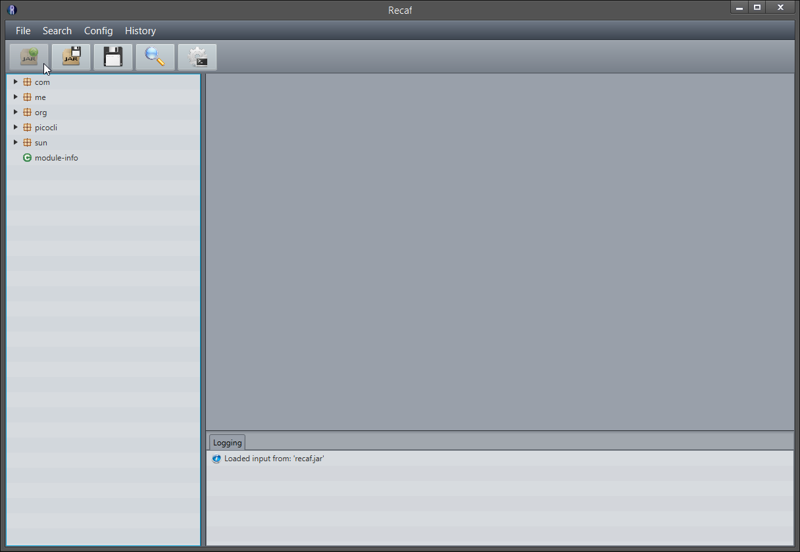
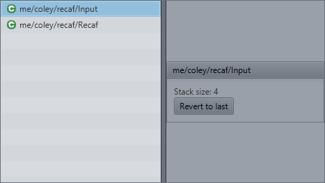
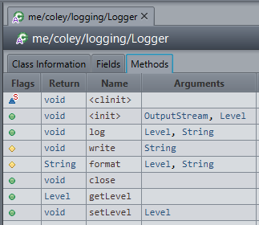
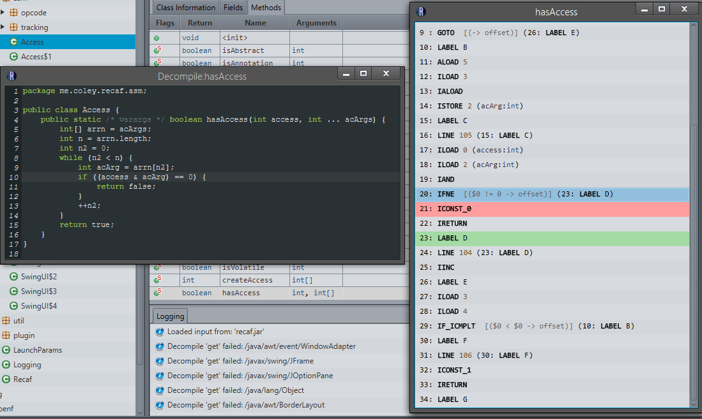
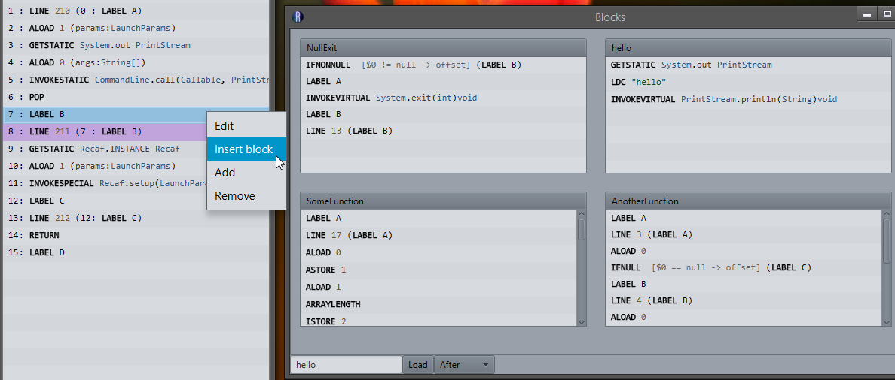
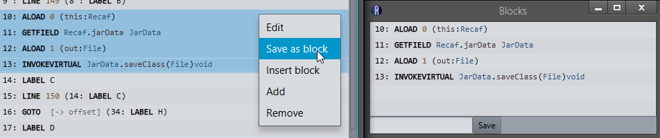
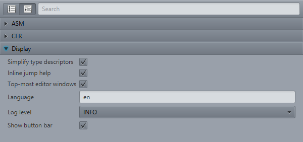
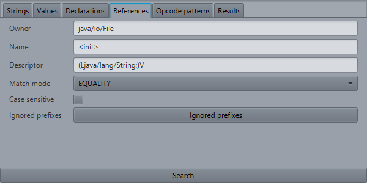
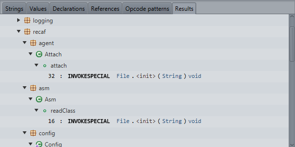

Loading & Exporting
Loading: Recaf supports modification of Jar and class files. To modify a file, select from the menu-bar File->Open or click the first button in the button-bar.
Save-states: When a file is loaded it is read into a virtual file system (VFS, Unix based). This VFS keeps track of changes to the loaded classes and allows for features such as save-states. Save-states allow you to keep bookmarks in the editing process so that in the case of a mistake you have a fallback option. You can create a save-state from the menu-bar History->Create save state or by clicking the floppy-disck in the button-bar.
To view and revert back to older states, select in the menu-bar History->View states. This will open a window with a list of classes containing save-states. Clicking on one will show the number of states it holdes and a button to revert to the last state.
Exporting: Exporting writes all current edits to a specified file.
Editing
 Once a file is loaded the tree-menu located in the left side of the UI is populated with entries from the VFS. Selecting one of these values loads it into a cache and displays the value in the center area.
Once a file is loaded the tree-menu located in the left side of the UI is populated with entries from the VFS. Selecting one of these values loads it into a cache and displays the value in the center area.
For editor panels, simple data types are represented as textfields. The values they represent are only updated when compliant input is within the text-box (Compliant != Valid. You can type in bogus for generic signatures for instance). More complex types typically are represented by a button that will open a separate editor window. These new windows then will have their fields represented by simple components. They are also closable with [Escape].
The picture to the left shows the tree having various paths expanded and the class Logger opened in the center area.
 The picture to the left shows method tab (The field tab is similar). Double-clicking rows these will open the editor window. Additionally, right-clicking rows will show a context-menu for additional options.
 Here is a method shown as decompiled code and bytecode. In the decompiled code the selected line contains an if statment, checking for a bitwise and operation resulting in 0. In the bytecode the selected line is a IFNE which jumps if the value is not 0 (also shown in jump hint). The destinations for comparison failure and success are also highlighted in red and green respectively. To edit any of the opcodes, double click them, or right-click and select Edit from the context menu. Here is an example with the jump opcode highlighted in the picture to the left.
{kind=link}
  To the left are pictures showing off the block-saving functionality. When you select multiple opcodes in a method you can save them as a "block". Later you can insert these blocks back into your program. Here is an example of inserting the block saved as "hello". You can type the name in the field or click the title on a block shown in the grid and then click "Load" to insert the block. The dropdown menu also lets you determine where, relative to your selection, to place the block.
In the case of malformed code being present in the method bytecode, you will be greeted with an tray-notification telling you where the invalid code is. This content will also be logged into the console.
Settings
 All settings can be found and modified in the settings window. The window can be opened via Settings in the menu-bar, or by the gear icon in the button-bar. Alternatively these options can be modified in their respective JSON files.
There are three primary option groups: Display, ASM, CFR.
By default the groups are shown as accordian groups (default ControlsFX layout) but if you really wanted (It gets cluttered), all options can be shown without grouping.
Display options pertain to how the user-interfaces is structured and behaves.
| Name | Description |
|---|---|
| Simplify type descriptors | Hides package name for type descriptors. com/example/Clazz becomes Clazz |
| Inline jump help | Shows opcode-specific jump logic next to displayed opcodes. IFNE (LABEL X) becomes IFNE [$0 != 0 -> offset] (LABEL X) |
| Top-most editor windows | When editing a value, keep the editor windoww top-most. This prevents windows being forgotten about behind the primary window. |
| Language | Value determines which language JSON to read translations from. Please contribute if you can: here |
| Log level | Level of verbosity of messages shown in the console |
| Show button-bar | Show the ease-of-access button-bar in the UI. Restarting is required for the change to be effective. |
ASM options pertain to how ASM is configured to read and write classes. The values of these options largely only pertain to classes that are modified. Classes that are not modified are not regenerated when exported. The exact original bytecode is used if a class has not been modified.
| Name | Description |
|---|---|
| Version | ASM library version to use. This really should only be set to lower values if you are attaching to a process with an older version of ASM already loaded into the JVM. |
| Compute maxs | Allow ASM to compute max-stack/local-variable-table sizes on export. |
| Compute frames | Allow ASM to compute stack frames on export. This should always remain on for output to executable without the JVM argument -noverify. |
| Reflection export | Alow ASM to use reflection to create more accurate stack-frames from core JRE classes. |
| Skip code | Allow ASM to skip parsing method opcodes. |
| Skip debug | Allow ASM to skip debug information such as variable names and source files. |
| Skip frames | Allow ASM to skip existing stack-frames when parsing new input. |
| Expand frames | Allow ASM to expand existing stack-frames into a common format |
CFR options are flags used by the decompiler. The list is very lengthy so for brevity's sake that content can be found here.
Searching


When there is one than one input field for a search, entering only one will widen the range of results. For example, if you do a reference search for Owner=java/io/File then the results will show every reference to any member of the File class. However when you specify a Name=<init> (constructor's internal name) then the results will show all instantiations of the File class.
These images to the left show the result of the search.
Search type table
| Type | Description | Arguments |
|---|---|---|
| Strings | Search for string constants |
|
| Values | Search for numeric constants |
|
| Declarations | Search for declared members |
|
| References | Search for references to members |
|
| Opcode patterns | Search for patterns in method bytecode |
|
Attaching
To use the attach API you need to invoke Recaf from a development kit's runtime. The standard Java runtime will not allow you to use this feature. You can easily do this by the following steps:
- Install JDK
- Copy %JDK%/lib/tools.jar to %JDK%/jre/libext (Moving into ext is the lazy/easy way. This step just ensures it is in the classpath.)
- Run recaf, but specify java.exe from the JDK's bin
- Example: "C:\Program Files\Java\jdk1.8.0_131\bin\java.exe" -jar Recaf.jar
Once Recaf is opened select Attach from the menu-bar. This will open a window that lists currently running virtual machines. Selecting one and clicking the button at the bottom will start a new instance of Recaf in this process as a java agent.
Editing as an agent is the same as normal usage, except to save changes you select File->Save changes instead of "File->Export. Exporting still performs as normal, the inclusion of Save changes redefines modified classes. There is a bug currently that requires you to sometimes run Save changes twice for redefinition to succeed.
Note: Click an image to view the full size.